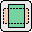
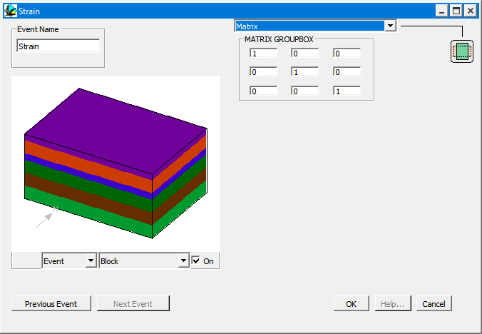

Strain
In order to define a Strain event, place a Strain icon

in the History window. You will then be provided with the Strain definition window.
Strain Definition Window
Strain allows arbitrary homogeneously applied strain tensors to be used. The strain is not constrained to be volume preserving.
There is no Plane Preview for the Strain Definition Window, however the other previews do work.
Noddy · open source under the MIT licence · Loop3D/noddy_qt